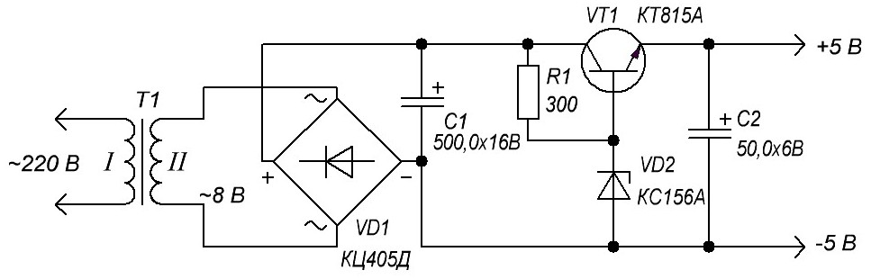
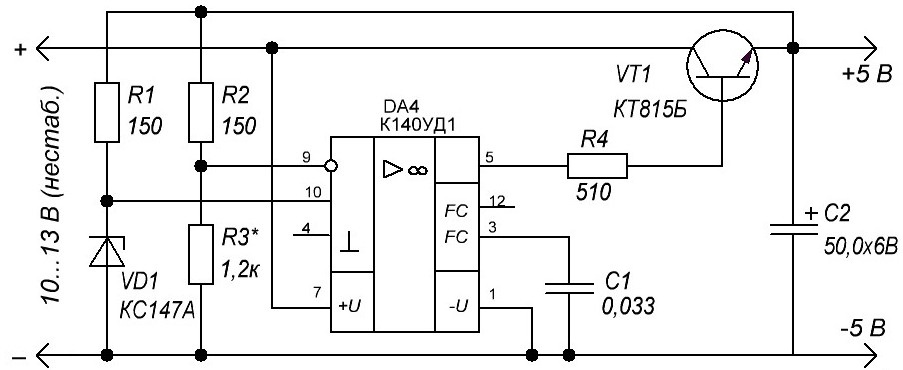
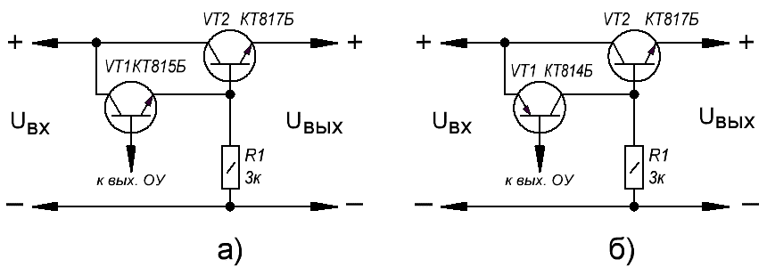
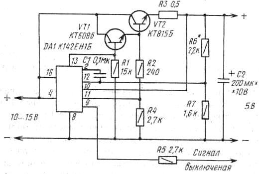
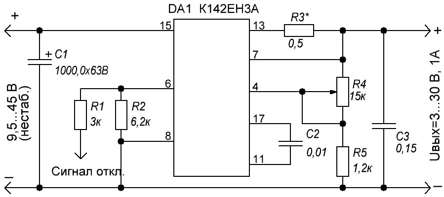
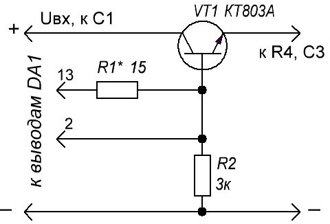
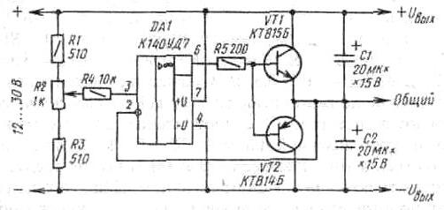

Стабилизаторы напряжения
Устройства, собранные на полупроводниковых приборах (транзисторы, тринисторы, микросхемы) и электромагнитных реле, питаются от источников постоянного напряжения. Отклонения напряжения от номинального значения не должны выходить за границы определенных допусков. Поэтому источник питания устройств кроме трансформатора и выпрямителя должен содержать еще и стабилизатор напряжения.
Основой стабилизатора напряжения чаще всего служит кремниевый стабилитрон, включенный в обратном направлении (катодом к положительному полюсу источника питания, анодом - к отрицательному). При таком включении напряжение на стабилитроне (напряжение стабилизации Ucт) мало зависит от тока через стабилитрон (тока стабилизации Icт). Эти две величины и являются основными параметрами стабилитронов. Так, для стабилитрона КС156А напряжение стабилизации (номинальное) составляет 5,6 В (при номинальном токе стабилизации 10 мА), а ток стабилизации может быть в пределах 3...50 мА. Если нагрузка потребляет больший ток, применяют усилитель тока. В простейшем случае это может быть транзистор, включенный по схеме с общим коллектором (эмиттерный повторитель).
Схема такого источника питания показана на рис. 1. Напряжение сети, пониженное трансформатором Т1 до 8 ... 10 В, выпрямляется диодным мостом VD1 и подается на стабилизатор напряжения, в котором транзистор VT1 включен эмиттерным повторителем.

Рис. 1 - Схема источника питания
Напряжение на выходе стабилизатора на 0,5...1 В меньше напряжения на стабилитроне VD2. По аналогичной схеме можно строить стабилизаторы и на другие значения питающих напряжений, следует лишь для каждого случая подобрать соответствующие стабилитрон и сопротивление резистора R1. Максимальный выходной ток стабилизатора Iвыхmах зависит от используемого стабилитрона и статического коэффициента передачи тока транзистора h21э и может быть найден по формуле
Iвых max=h21эIст max.
Стабилизатор напряжения, собранный по схеме на рис. 1, обладает сравнительно невысокими эксплуатационными характеристиками, но тем не менее может успешно применяться для питания многих радиотехнических устройств.
На рис. 2 приведена схема еще одного стабилизатора напряжения, но с использованием операционного усилителя (ОУ). Такие усилители имеют очень большой коэффициент усиления (несколько сотен и даже тысяч) и два входа - инвертирующий (на графическом изображении ОУ обозначают кружком) и неинвертирующий. Сигналы, поданные на эти входы, суммируются с учетом их знака и многократно усиливаются. Характерная особенность стабилизатора напряжения с применением ОУ заключается в том, что в нем выходное напряжение сравнивается с образцовым (опорным) и таким образом поддерживается на заданном) уровне.

Рис. 2 - Схема стабилизатора напряжения с использованием операционного усилителя
Рассмотрим по схеме более подробно работу такого стабилизатора напряжения. Выходное напряжение с делителя R2R3 подается на инвертирующий вход ОУ, а образцовое напряжение, снимаемое со стабилитрона VD1, - на неинвертирующий вход. При небольшом изменении напряжения на выходе стабилизатора на инвертирующем входе (вывод 9) появляется сигнал рассогласования, который многократно усиливается и изменяет напряжение на регулирующем транзисторе VT1 таким образом, что напряжение на выходе стабилизатора практически не изменяется. Этот процесс длится всего несколько микросекунд.
Напряжение на выходе стабилизатора можно определить по упрощенной формуле
Uвыx=Uст(R2+R3)/R3.
Изменяя в небольших пределах сопротивления резисторов R2 и R3, можно изменять выходное напряжение стабилизатора. При этом, как видно из формулы, выходное напряжение не может быть меньше напряжения стабилизации стабилитрона.
Резистор R4 ограничивает выходной ток ОУ, конденсатор С1 предотвращает возбуждение устройства. Коэффициент стабилизации этого источника напряжения составляет 200...400, а выходное сопротивление - несколько миллиом. Максимальный выходной ток равен произведению предельно допустимого выходного тока ОУ на коэффициент h21э транзистора VT1 и для данной схемы составляет 500... 600 мА. Если же для питания устройства требуется больший ток, чем может обеспечить один регулирующий транзистор, следует применять составной транзистор (например, типов КТ972, КТ825, КТ827). При отсутствии составного транзистора в одном корпусе его можно выполнить из двух обычных транзисторов одной или разных структур.

Рис. 3 - Составной транзистор из транзисторов одной структуры n-р-n (а) и из транзисторов разных структур (б)
На рис. 3,а показана схема составного транзистора, образованного транзисторами одной структуры (n-р-n), на рис. 3, б - образованного транзисторами разных структур (VT1 - р-n-р, VT2 - n-р-n). Резистор R1 обеспечивает нормальную работу стабилизатора при высоких температурах окружающей среды и малых токах нагрузки. Ток, протекающий через этот резистор, должен быть значительно больше обратного тока коллекторного перехода транзистора VT1 при наибольшей рабочей температуре. Если ток через регулирующий транзистор VT1 превышает 70... 100 мА, транзистор следует устанавливать на радиатор. Площадь радиатора можно приближенно определить по формуле (для температуры окружающего воздуха около 20°С)
S = 25UкэIнагр,
где
S - площадь поверхности охлаждения радиатора, см2;
Uкэ - напряжение между коллектором и эмиттером регулирующего транзистора, В;
Iнагр - ток нагрузки стабилизатора, А.
На рис. 4 приведена схема еще одного варианта стабилизатора напряжения. В нем применена интегральная микросхема К142ЕН1Б, представляющая собой стабилизатор напряжения. Вот ее основные параметры:
- диапазон изменения входного напряжения 9...20 В;
- пределы установки выходного напряжения 3...12 В; максимальный ток нагрузки 0,15 А;
- минимальное падение напряжения на регулирующем элементе 4 В.
В микросхеме предусмотрена защита от перегрузок по току и коротких замыкании.

Рис. 4 - Схема источника питания с использованием микросхемы стабилизатора напряжения
Для указанных на схеме рис. 4 транзисторов и номиналов резисторов выходное напряжение составляет 5 В, а ток срабатывания защитного устройства около 1 А (при уменьшении тока через нагрузку устройство автоматически принимает исходное состояние). При необходимости ток ограничения Ioгр может быть изменен подбором резистора R3. Его сопротивление рассчитывают по формуле
R3=0,5/Iогр,
где
R3 - в омах;
Iогр - в амперах.
Выходное напряжение устанавливают подбором резистора R6.
В микросхеме предусмотрен вход выключения стабилизатора. При подаче на вывод 9 через резистор R5 напряжения 2...3 В напряжение на выходе становится равным нулю, Удобно управлять включением и выключением стабилизатора с помощью цифровых микросхем, имеющих питание 5 В.
В настоящее время промышленность выпускает интегральные стабилизаторы с фиксированным напряжением, содержащие в одном корпусе регулирующий транзистор и узлы управления им (микросхемы серий К142, КР142). Схема стабилизатора напряжением 5 В представлена на рис. 5. Микросхема КР142ЕН5А содержит узел защиты от перегрузки по току. Максимальное значение тока для этой микросхемы составляет около 3 А.
На микросхеме К142ЕН3А можно выполнить стабилизированный источник напряжения, регулируемого в пределах от 3 до 30 В при токе нагрузки до 1 А. Схема представлена на рис. 106. Выходное напряжение регулируется резистором R4 и может быть вычислено по формуле
Uвыx = 2,6(R4+R5)/R5 [В]
Суммарное сопротивление резисторов R4 и R5 не должно превышать 20 кОм. Ток ограничения Iогр устанавливают резистором R3, сопротивление которого может быть вычислено по приближенной формуле
R3 = 0,6/Ioгp,
где сопротивление берут в омах, а ток - в амперах.
В стабилизаторе предусмотрена возможность отключения внешним сигналом. Для этого на резистор R1 подают положительное напряжение, которое должно обеспечивать ток через резистор R1 не более З мА. В стабилизаторе предусмотрена также тепловая защита (при нагревании корпуса микросхемы до определенной температуры выходное напряжение уменьшается до нуля). Температура отключения определяется сопротивлением резистора R2.

Рис. 6 - Схема регулируемого источник напряжения на базе интегрального стабилизатора К142ЕН3А

Рис. 7 - Схема усилителя выходного тока стабилизатора напряжения
Микросхема DA1 должна быть установлена на радиаторе, обеспечивающем требуемую рассеиваемую молодость. Она не должна превышать 6 Вт. Для обеспечения этого условия во всем диапазоне регулируемого выходного напряжения следует применять ступенчатое регулирование выходного напряжения.
Если требуется увеличить допустимый выходной ток, можно применить усилитель тока на транзисторе.
Фрагмент схемы приведен на рис. 7. Резистор R1 подбирают исходя из требуемого тока ограничения (он выполняет ту же функцию, что и резистор R3 в предыдущей схеме). Ток нагрузки может достигать 5...10 А.
Иногда возникает необходимость получить двуполярное напряжение от однополярного источника (например, для питания операционных усилителей). В этом случае можно воспользоваться приставкой, схема которой представлена на рис. 8.

Рис. 8 - Схема приставки для получения двуполярного напряжения из однополярного
Устройство представляет собой усилитель постоянного тока, выполненный на операционном усилителе DA1 и транзисторах VT1 VT2 включенных по схеме эмиттерного повторителя. Работает устройство следующим образом. Задающее напряжение подается на неинвертирующий вход ОУ (вывод 3) с делителя R1-R3 через резистор R4. На инвертирующий вход ОУ (вывод 2) подается сигнал с выхода эмиттерного повторителя (сигнал отрицательной обратной связи). Допустим, что по какой-либо причине напряжение на выходе эмиттерного повторителя стало больше, чем напряжение на движке переменного резистора R2. Тогда на входах ОУ будет действовать результирующий отрицательный сигнал. Напряжение на выходе ОУ при этом уменьшится, что вызовет приоткрывание транзистора VT2 и призакрывание транзистора VT1. В результате напряжение на выходе снизится. Поскольку коэффициент усиления ОУ составляет несколько десятков тысяч (для данного типа более 30 000) то в процессе работы напряжения на входах ОУ будут равны, следовательно, напряжение на выходе эмиттерного повторителя полностью определяется положением движка переменного резистора Операционный усилитель К140УД7 можно заменить на К140УД8, К140УД14, К140УД20, К140УД9. Выбор транзисторов VT1, VI2 определяется максимальным током, который необходимо получить от источника. Заметим, что через эти транзисторы протекает ток, равный разности токов нагрузок, подключенных к положительному и отрицательному выходам. Исходя из этого следует выбирать и радиаторы для транзисторов. Кроме того, ток через транзисторы не может быть больше максимального выходного тока ОУ, умноженного на статический коэффициент передачи тока транзисторов h21э. В данном случае он может достигать 200 мА. При необходимости получения больших токов следует применять составные транзисторы.